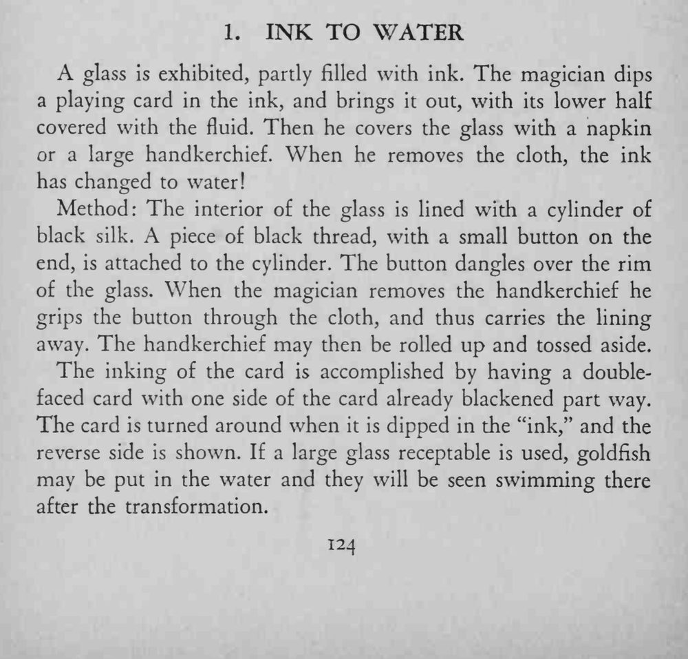

一杯装着墨水的玻璃杯，魔术师把一张扑克牌浸进去，下半截沾满墨汁；用手帕盖住杯子再揭开，墨水已变成清水。
纽扣要正好挂在杯沿外，揭盖时才能一捏就走。

A glass is exhibited, partly filled with ink. The magician dips a playing card in the ink, and brings it out, with its lower half covered with the fluid. Then he covers the glass with a napkin or a large handkerchief. When he removes the cloth, the ink has changed to water! Method: The interior of the glass is lined with a cylinder of black silk. A piece of black thread, with a small button on the end, is attached to the cylinder. The button dangles over the rim of the glass. When the magician removes the handkerchief he grips the button through the cloth, and thus carries the lining away. The handkerchief may then be rolled up and tossed aside. The inking of the card is accomplished by having a doublefaced card with one side of the card already blackened part way. The card is turned around when it is dipped in the "ink," and the reverse side is shown. If a large glass receptable is used, goldfish may be put in the water and they will be seen swimming there after the transformation.